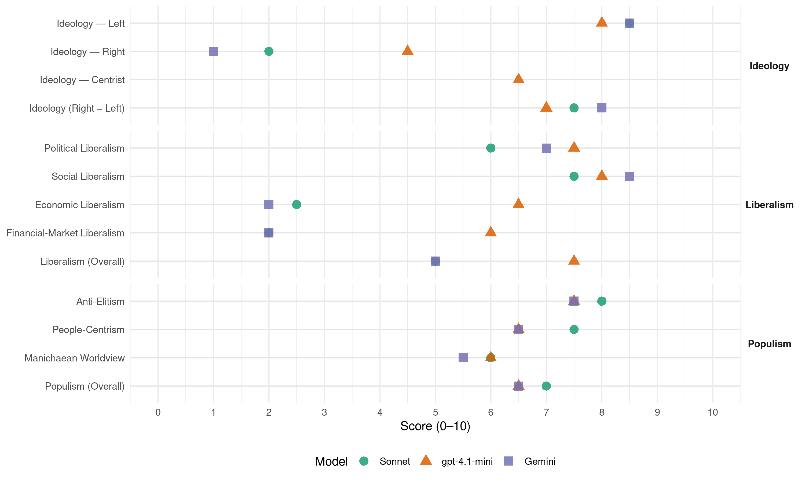

SP (Netherlands, 2017)
manifesto_id 22220_201703
Get full text: This site shows derived annotations and short verbatim quotes only. The full manifesto text is © Manifesto Project / WZB — obtain it via manifesto-project.wzb.eu using the manifesto_id above.
Headline scores
| Dimension | Sonnet | gpt-4.1-mini | Gemini |
|---|---|---|---|
| Populism (Overall) | 7.0 | 6.5 | 6.5 |
| Anti-Elitism | 8.0 | 7.5 | 7.5 |
| People-Centrism | 7.5 | 6.5 | 6.5 |
| Manichaean Worldview | 6.0 | 6.0 | 5.5 |
| Ideology (Right − Left) | 7.5 | 7.0 | 8.0 |
| Liberalism (Overall) | 5.0 | 7.5 | 5.0 |
| Political Liberalism | 6.0 | 7.5 | 7.0 |
| Social Liberalism | 7.5 | 8.0 | 8.5 |
| Economic Liberalism | 2.5 | 6.5 | 2.0 |
| Financial-Market Liberalism | 2.0 | 6.0 | 2.0 |
Evidence per dimension
Economic Liberalism
Gemini · score 2.0 · verified · chunk 1
“neoliberale modellen van het CPB”
inzetten op alternatieven voor de neoliberale modellen van het CPB. Er is meer dan het bruto binnenlands
Gemini · score 2.0 · verified · chunk 2
“mordicus tegen de invoering van TTIP, CETA en andere vrijhandelsverdragen”
eerlijke handel, tot wederzijds voordeel. Daarom zijn we mordicus tegen de invoering van TTIP, CETA en andere vrijhandelsverdragen die onze democratie ondermijnen
gpt-4.1-mini · score 7.0 · verified · chunk 1
“We voeren een miljonairsbelasting in. Door de vermogens eerlijker te belasten, is de gewone spaarder beter af”
Laten we multinationals voortaan gewoon belasting betalen, voeren we een extra belasting in voor miljonairs en gaan de lasten voor mensen met een middeninkomen en lager inkomen omlaag. We voeren een miljonairsbelasting in. Door de vermogens eerlijker te belasten, is de gewone spaarder beter af.
gpt-4.1-mini · score 6.0 · verified · chunk 2
“We willen samenwerken in Europa, bij onderwerpen als bestrijding van internationale criminaliteit, grensoverschrijdende milieuvervuiling etc., maar laten ons niet meer de regels opleggen door ambtenaren in Brussel”
We willen samenwerken in Europa, bij onderwerpen als bestrijding van internationale criminaliteit, grensoverschrijdende milieuvervuiling etc., maar laten ons niet meer de regels opleggen door ambtenaren in Brussel. We zetten ons in voor eerlijke handel, tot wederzijds voordeel. Daarom zijn we mordicus tegen de invoering van TTIP, CETA en andere vrijhandelsverdragen die onze democratie ondermijnen en vooral gunstig zijn voor multinationals.
Sonnet · score 2.0 · verified · chunk 1
“Waar niet de financiële markten, maar de mensen”
Waar niet de financiële markten, maar de mensen het laatste woord hebben. Ik sta niet toe dat in ons land mensen tegen elkaar worden uitgespeeld
Sonnet · score 3.0 · verified · chunk 2
“mordicus tegen de invoering van TTIP, CETA”
Daarom zijn we mordicus tegen de invoering van TTIP, CETA en andere vrijhandelsverdragen die onze democratie ondermijnen en vooral gunstig zijn voor multinationals.
Financial-Market Liberalism
Gemini · score 2.0 · verified · chunk 1
“scheiding tussen spaar- en zakenbanken”
belasting, waarmee banken de kosten terugbetalen van de operaties waarmee ze zijn gered, gaat omhoog. We willen een scheiding tussen spaar- en zakenbanken, zo verhinderen we dat banken gokken
Gemini · score 2.0 · verified · chunk 2
“ingrijpende regulering van de financiële markten nodig”
via referenda. Er is een ingrijpende regulering van de financiële markten nodig, als voorwaarde om de economie in de Europese
gpt-4.1-mini · score 6.0 · verified · chunk 1
“We willen een scheiding tussen spaar- en zakenbanken, zo verhinderen we dat banken gokken met het spaargeld van hun klanten”
We willen een schei-ding tussen spaar- en zakenbanken, zo verhinderen we dat banken gokken met het spaargeld van hun klanten. De inkomens aan de top van de banken worden beperkt en komen onder de cao. Banken moeten meer verantwoording afleggen over de maatschappelijke consequenties van de leningen die ze verstrekken.
gpt-4.1-mini · score 6.0 · verified · chunk 2
“In de financiële wereld moet fraude worden bestreden en speculatie aan banden worden gelegd”
Er is een ingrijpende regulering van de financiële markten nodig, als voorwaarde om de economie in de Europese landen stabiel te maken. In de financiële wereld moet fraude worden bestreden en speculatie aan banden worden gelegd. Belastingontwijking door multinationals en brievenbusondernemingen worden aangepakt, door verplichte afspraken tussen landen in Europa.
Sonnet · score 2.0 · verified · chunk 1
“een transactietaks (‘Tobintaks’) invoeren”
Om de financiële markten te reguleren gaan we de handel in derivaten inperken en marktmanipulatie hard aanpakken. Ook willen we een transactietaks (‘Tobintaks’) invoeren.
Sonnet · score 2.0 · verified · chunk 2
“ingrijpende regulering van de financiële markten nodig”
Er is een ingrijpende regulering van de financiële markten nodig, als voorwaarde om de economie in de Europese landen stabiel te maken.
Political Liberalism
Gemini · score 6.0 · verified · chunk 1
“directe inspraak en zeggenschap van mensen”
behoefte aan is. Directe inspraak en zeggenschap van mensen maakt onze democratie sterker en de besluiten beter
Gemini · score 8.0 · verified · chunk 2
“versterken we de rechten van burgers en werknemers”
Rechten van de Mens en tot het Europees Sociaal Handvest. Daarmee versterken we de rechten van burgers en werknemers in heel Europa.
gpt-4.1-mini · score 8.0 · verified · chunk 1
“We willen een studiebeurs voor alle studenten. Jongeren uit gezinnen met een lager inkomen krijgen daar bovenop een verhoogde aanvullende beurs”
EEN STUDIEBEURS VOOR ALLE STUDENTEN. We willen een studiebeurs voor alle studenten. Jongeren uit gezinnen met een lager inkomen krijgen daar bovenop een verhoogde aanvullende beurs. Hiermee wordt voor deze jongeren een financiële drempel weggenomen om te gaan studeren.
gpt-4.1-mini · score 7.0 · verified · chunk 2
“De Europese Unie treedt toe tot het Europees Verdrag voor de Rechten van de Mens”
We dragen geen bevoegdheden meer over van de nationale parlementen aan het Europees Parlement. We stoppen met het geldverslindende verhuiscircus van het Europees Parlement tussen Brussel en Straatsburg. We pleiten voor een parlementair dubbelmandaat, zodat nationale volksvertegenwoordigers ook zitting kunnen nemen in het Europees Parlement. Zij vertegenwoordigen immers niet een ‘Europees’ belang, maar de belangen van hun kiezers. De Europese Unie treedt toe tot het Europees Verdrag voor de Rechten van de Mens en tot het Europees Sociaal Handvest. Daarmee versterken we de rechten van burgers en werknemers in heel Europa.
Sonnet · score 5.0 · mixed · chunk 1
“correctief referendum, zodat de bevolking ook”
In plaats van een raadgevend referendum willen we zo snel mogelijk een correctief referendum, zodat de bevolking ook tussen de verkiezingen door de gekozen vertegenwoordigers kan corrigeren
Sonnet · score 6.0 · verified · chunk 2
“rechten van burgers en werknemers in heel Europa”
De Europese Unie treedt toe tot het Europees Verdrag voor de Rechten van de Mens en tot het Europees Sociaal Handvest. Daarmee versterken we de rechten van burgers en werknemers in heel Europa.
Liberalism (Overall)
Gemini · score 5.0 · verified · chunk 1
“vrijheid en democratie”
Op 5 mei vieren we onze gezamenlijke traditie van vrijheid en democratie. Deze dag wordt voor iedereen een officiële feestdag
Gemini · score 5.0 · verified · chunk 2
“versterken we de rechten van burgers en werknemers”
Rechten van de Mens en tot het Europees Sociaal Handvest. Daarmee versterken we de rechten van burgers en werknemers in heel Europa.
gpt-4.1-mini · score 8.0 · verified · chunk 1
“We willen een studiebeurs voor alle studenten. Jongeren uit gezinnen met een lager inkomen krijgen daar bovenop een verhoogde aanvullende beurs”
EEN STUDIEBEURS VOOR ALLE STUDENTEN. We willen een studiebeurs voor alle studenten. Jongeren uit gezinnen met een lager inkomen krijgen daar bovenop een verhoogde aanvullende beurs. Hiermee wordt voor deze jongeren een financiële drempel weggenomen om te gaan studeren.
gpt-4.1-mini · score 7.0 · verified · chunk 2
“De Europese Unie treedt toe tot het Europees Verdrag voor de Rechten van de Mens”
We pleiten voor een parlementair dubbelmandaat, zodat nationale volksvertegenwoordigers ook zitting kunnen nemen in het Europees Parlement. Zij vertegenwoordigen immers niet een ‘Europees’ belang, maar de belangen van hun kiezers. De Europese Unie treedt toe tot het Europees Verdrag voor de Rechten van de Mens en tot het Europees Sociaal Handvest. Daarmee versterken we de rechten van burgers en werknemers in heel Europa.
Sonnet · score 4.0 · mixed · chunk 1
“ingrijpende regulering van de financiële markten”
Er is een ingrijpende regulering van de financiële markten nodig, als voorwaarde om de economie in de Europese landen stabiel te maken.
Sonnet · score 5.0 · verified · chunk 2
“rechten van burgers en werknemers”
Daarmee versterken we de rechten van burgers en werknemers in heel Europa.
Anti-Elitism
Gemini · score 8.0 · verified · chunk 1
“De politiek van de elite”
het thuisgevoel verdwijnt. Mensen zijn druk met zichzelf en hebben weinig tijd voor een ander. DE POLITIEK VAN DE ELITE Nederland heeft meer miljonairs dan ooit, maar tegelijk
Gemini · score 7.0 · verified · chunk 2
“niet meer de regels opleggen door ambtenaren in Brussel”
milieuvervuiling etc., maar laten ons niet meer de regels opleggen door ambtenaren in Brussel. We zetten ons in voor eerlijke handel
gpt-4.1-mini · score 9.0 · verified · chunk 1
“De SP werkt permanent aan de vorming van maatschappelijke coalities met burgers die strijden tegen ongelijkheid”
1 MINDER MARKT EN MEER DEMOCRATIE De SP werkt permanent aan de vorming van maatschappelijke coalities met burgers die strijden tegen ongelijkheid, voor de publieke sector en voor democratische zeggenschap. In het onderwijs organiseren we meer zeggenschap voor personeel, studenten en ouders.
gpt-4.1-mini · score 6.0 · verified · chunk 2
“We dringen de invloed van de grote hoeveelheid lobbyisten in Brussel terug”
Het Stabiliteits- en groeipact moet op de schop, omdat de huidige regels de recessie in veel Europese landen verergeren. Landen moeten volledige zeggenschap terugkrijgen over hun begrotingsbeleid. We dringen de invloed van de grote hoeveelheid lobbyisten in Brussel terug. Daarmee beperken we ook de macht van de financiële sector. Europese samenwerking kan alleen plaatsvinden met steun van de bevolking.
Sonnet · score 9.0 · verified · chunk 1
“DE POLITIEK VAN DE ELITE”
Premier Rutte heeft goed gezorgd voor de directeuren en bestuurders, voor de banken en multinationals. Deze elite is na de crisis rijker dan daarvoor.
Sonnet · score 7.0 · verified · chunk 2
“invloed van de grote hoeveelheid lobbyisten”
We dringen de invloed van de grote hoeveelheid lobbyisten in Brussel terug. Daarmee beperken we ook de macht van de financiële sector.
Ideology — Centrist
gpt-4.1-mini · score 7.0 · verified · chunk 1
“Politiek hoort te gaan over hoe we rekening houden met een ander en samen problemen oplossen”
Zij houden niet van opscheppers en van betweters, van bestuurders die vooral zichzelf vooropstellen. Politiek hoort te gaan over hoe we rekening houden met een ander en samen problemen oplossen. Dat zijn ook de waarden waar mijn partij en ik mee werken.
gpt-4.1-mini · score 6.0 · verified · chunk 2
“Bij belangrijke besluiten dienen mensen zich daarom altijd uit te kunnen spreken, bijvoorbeeld via referenda”
Europese samenwerking kan alleen plaatsvinden met steun van de bevolking. Bij belangrijke besluiten dienen mensen zich daarom altijd uit te kunnen spreken, bijvoorbeeld via referenda. Er is een ingrijpende regulering van de financiële markten nodig, als voorwaarde om de economie in de Europese landen stabiel te maken.
Sonnet · score 2.0 · mixed · chunk 1
“Pak de macht!”
Pak de macht! Ik reken op uw steun. Emile Roemer — generic appeal but embedded in strong left-wing programmatic context
Sonnet · score 2.0 · mixed · chunk 2
“belangen van hun kiezers”
Zij vertegenwoordigen immers niet een ‘Europees’ belang, maar de belangen van hun kiezers.
Ideology — Left
Gemini · score 9.0 · verified · chunk 1
“extra belasting in voor miljonairs”
multinationals voortaan gewoon belasting betalen, voeren we een extra belasting in voor miljonairs en gaan de lasten voor mensen met een middeninkomen
Gemini · score 8.0 · verified · chunk 2
“gezamenlijke strijd tegen internationale ondernemingen”
internationale solidariteit en andere organisaties. Deze gezamenlijke strijd tegen internationale ondernemingen heeft onze volledige steun.
gpt-4.1-mini · score 9.0 · verified · chunk 1
“We voeren een miljonairsbelasting in. Door de vermogens eerlijker te belasten, is de gewone spaarder beter af”
Laten we multinationals voortaan gewoon belasting betalen, voeren we een extra belasting in voor miljonairs en gaan de lasten voor mensen met een middeninkomen en lager inkomen omlaag. We voeren een miljonairsbelasting in. Door de vermogens eerlijker te belasten, is de gewone spaarder beter af.
gpt-4.1-mini · score 7.0 · verified · chunk 2
“Belastingontwijking door multinationals en brievenbusondernemingen worden aangepakt”
In de financiële wereld moet fraude worden bestreden en speculatie aan banden worden gelegd. Belastingontwijking door multinationals en brievenbusondernemingen worden aangepakt, door verplichte afspraken tussen landen in Europa. We zetten alles op alles om de Nederlandse afdracht aan de Europese Unie (EU) fors te verlagen.
Sonnet · score 9.0 · verified · chunk 1
“Verhogen we het minimumloon, de AOW-uitkering”
Verhogen we het minimumloon, de AOW-uitkering en het sociaal minimum met 10 procent. En verlagen we de AOW-leeftijd naar 65 jaar.
Sonnet · score 8.0 · verified · chunk 2
“gezamenlijke strijd tegen internationale ondernemingen”
Deze gezamenlijke strijd tegen internationale ondernemingen heeft onze volledige steun.
Ideology (Right − Left)
Gemini · score 8.0 · verified · chunk 1
“strijs tegen ongelijkheid, voor de publieke”
maatschappelijke coalities met burgers die strijden tegen ongelijkheid, voor de publieke sector en voor democratische zeggenschap. In het
Gemini · score 8.0 · verified · chunk 2
“gezamenlijke strijd tegen internationale ondernemingen”
internationale solidariteit en andere organisaties. Deze gezamenlijke strijd tegen internationale ondernemingen heeft onze volledige steun.
gpt-4.1-mini · score 8.0 · verified · chunk 1
“De SP werkt permanent aan de vorming van maatschappelijke coalities met burgers die strijden tegen ongelijkheid”
1 MINDER MARKT EN MEER DEMOCRATIE De SP werkt permanent aan de vorming van maatschappelijke coalities met burgers die strijden tegen ongelijkheid, voor de publieke sector en voor democratische zeggenschap. In het onderwijs organiseren we meer zeggenschap voor personeel, studenten en ouders.
gpt-4.1-mini · score 6.0 · verified · chunk 2
“Toekomstige uitbreidingen van de EU worden altijd via een referendum aan de bevolking voorgelegd”
De Europese Unie wordt voorlopig niet uitgebreid. Turkije kan onder de huidige omstandigheden geen lid worden van de Europese Unie (EU). Toekomstige uitbreidingen van de EU worden altijd via een referendum aan de bevolking voorgelegd. Het Stabiliteits- en groeipact moet op de schop, omdat de huidige regels de recessie in veel Europese landen verergeren.
Sonnet · score 8.0 · verified · chunk 1
“anti-corporatieve elite, herverdeling”
Laten we multinationals voortaan gewoon belasting betalen, voeren we een extra belasting in voor miljonairs en gaan de lasten voor mensen met een middeninkomen en lager inkomen omlaag.
Sonnet · score 7.0 · verified · chunk 2
“strijd tegen internationale ondernemingen”
Deze gezamenlijke strijd tegen internationale ondernemingen heeft onze volledige steun.
Ideology — Right
Gemini · score 2.0 · verified · chunk 1
“reguleren we de komst van arbeidsmigranten”
opvang van vluchtelingen in de regio, in Europa en in ons land, integreren we nieuwkomers en reguleren we de komst van arbeidsmigranten. Schaffen we de huidige Europese Commissie af
Gemini · score 0.0 · verified · chunk 2
“Vluchtelingen die langdurig verdreven zijn van huis en haard moeten een menswaardig bestaan kunnen opbouwen”
opvang in de regio’s rond conflicten barst uit zijn voegen. Vluchtelingen die langdurig verdreven zijn van huis en haard moeten een menswaardig bestaan kunnen opbouwen. Daarnaast moeten we mensensmokkelaars
gpt-4.1-mini · score 3.0 · verified · chunk 1
“We willen het egoïsme bestrijden en de eenheid versterken. Voor onze gedeelde toekomst”
Ik wil het egoïsme bestrijden en de eenheid versterken. Voor onze gedeelde toekomst. Nederland moet een land zijn waar iedereen kan meedoen en ieder mens zich thuis kan voelen; een land waar je niet wordt beoordeeld op je afkomst, maar op je eigen inzet.
gpt-4.1-mini · score 6.0 · verified · chunk 2
“Toekomstige uitbreidingen van de EU worden altijd via een referendum aan de bevolking voorgelegd”
De Europese Unie wordt voorlopig niet uitgebreid. Turkije kan onder de huidige omstandigheden geen lid worden van de Europese Unie (EU). Toekomstige uitbreidingen van de EU worden altijd via een referendum aan de bevolking voorgelegd. Het Stabiliteits- en groeipact moet op de schop, omdat de huidige regels de recessie in veel Europese landen verergeren.
Sonnet · score 2.0 · verified · chunk 1
“reguleren we de komst van arbeidsmigranten”
Zorgen we voor betere opvang van vluchtelingen in de regio, in Europa en in ons land, integreren we nieuwkomers en reguleren we de komst van arbeidsmigranten.
Sonnet · score 2.0 · verified · chunk 2
“Turkije kan onder de huidige omstandigheden geen lid worden”
Turkije kan onder de huidige omstandigheden geen lid worden van de Europese Unie (EU).
Manichaean Worldview
Gemini · score 6.0 · verified · chunk 1
“egoïsme bestrijden en de eenheid”
tegen ongelovig, of jong tegen oud. Ik wil het egoïsme bestrijden en de eenheid versterken. Voor onze gedeelde toekomst. Nederland moet
Gemini · score 5.0 · verified · chunk 2
“vrijhandelsverdragen die onze democratie ondermijnen”
mordicus tegen de invoering van TTIP, CETA en andere vrijhandelsverdragen die onze democratie ondermijnen en vooral gunstig zijn voor multinationals.
gpt-4.1-mini · score 7.0 · verified · chunk 1
“De SP werkt permanent aan de vorming van maatschappelijke coalities met burgers die strijden tegen ongelijkheid”
1 MINDER MARKT EN MEER DEMOCRATIE De SP werkt permanent aan de vorming van maatschappelijke coalities met burgers die strijden tegen ongelijkheid, voor de publieke sector en voor democratische zeggenschap. In het onderwijs organiseren we meer zeggenschap voor personeel, studenten en ouders.
gpt-4.1-mini · score 5.0 · verified · chunk 2
“We zetten ons in voor eerlijke handel, waarvan ook de bevolking van de betrokken landen profiteert”
We willen samenwerken in Europa, bij onderwerpen als bestrijding van internationale criminaliteit, grensoverschrijdende milieuvervuiling etc., maar laten ons niet meer de regels opleggen door ambtenaren in Brussel. We zetten ons in voor eerlijke handel, tot wederzijds voordeel. Daarom zijn we mordicus tegen de invoering van TTIP, CETA en andere vrijhandelsverdragen die onze democratie ondermijnen en vooral gunstig zijn voor multinationals. In plaats daarvan zetten we ons in voor eerlijke handel, waarvan ook de bevolking van de betrokken landen profiteert.
Sonnet · score 7.0 · verified · chunk 1
“niet alleen is voor de elite, maar voor iedereen”
Dat de politiek er niet alleen is voor de elite, maar voor iedereen. Zekerheid is een voorwaarde voor vrijheid
Sonnet · score 5.0 · verified · chunk 2
“vrijhandelsverdragen die onze democratie ondermijnen”
mordicus tegen de invoering van TTIP, CETA en andere vrijhandelsverdragen die onze democratie ondermijnen en vooral gunstig zijn voor multinationals
People-Centrism
Gemini · score 7.0 · verified · chunk 1
“de mensen het laatste woord”
concurreren, maar met elkaar kunnen samenwerken. Waar niet de financiële markten, maar de mensen het laatste woord heb-ben. Ik sta niet toe dat in ons land
Gemini · score 6.0 · verified · chunk 2
“waarvan ook de bevolking van de betrokken landen profiteert”
in voor eerlijke handel, waarvan ook de bevolking van de betrokken landen profiteert. Zolang de EU bevoegdheden uitoefent
gpt-4.1-mini · score 8.0 · verified · chunk 1
“Politiek hoort te gaan over hoe we rekening houden met een ander en samen problemen oplossen”
Zij houden niet van opscheppers en van betweters, van bestuurders die vooral zichzelf vooropstellen. Politiek hoort te gaan over hoe we rekening houden met een ander en samen problemen oplossen. Dat zijn ook de waarden waar mijn partij en ik mee werken.
gpt-4.1-mini · score 5.0 · verified · chunk 2
“Europese samenwerking kan alleen plaatsvinden met steun van de bevolking”
We dringen de invloed van de grote hoeveelheid lobbyisten in Brussel terug. Daarmee beperken we ook de macht van de financiële sector. Europese samenwerking kan alleen plaatsvinden met steun van de bevolking. Bij belangrijke besluiten dienen mensen zich daarom altijd uit te kunnen spreken, bijvoorbeeld via referenda.
Sonnet · score 8.0 · verified · chunk 1
“Wij zijn er voor iedereen”
WIJ ZIJN ER VOOR IEDEREEN Die mentaliteit van hard werken, succes boeken en jezelf blijven zie ik vaak terug als ik op bezoek ben bij mensen
Sonnet · score 7.0 · verified · chunk 2
“Europese samenwerking kan alleen plaatsvinden met steun van de bevolking”
Europese samenwerking kan alleen plaatsvinden met steun van de bevolking. Bij belangrijke besluiten dienen mensen zich daarom altijd uit te kunnen spreken
Populism (Overall)
Gemini · score 7.0 · verified · chunk 1
“politiek er niet alleen is voor de elite”
rekenen op een fatsoenlijke oude dag. Dat de politiek er niet alleen is voor de elite, maar voor iedereen. Zekerheid is een voorwaarde
Gemini · score 6.0 · verified · chunk 2
“niet meer de regels opleggen door ambtenaren in Brussel”
milieuvervuiling etc., maar laten ons niet meer de regels opleggen door ambtenaren in Brussel. We zetten ons in voor eerlijke handel
gpt-4.1-mini · score 8.0 · verified · chunk 1
“De SP werkt permanent aan de vorming van maatschappelijke coalities met burgers die strijden tegen ongelijkheid”
1 MINDER MARKT EN MEER DEMOCRATIE De SP werkt permanent aan de vorming van maatschappelijke coalities met burgers die strijden tegen ongelijkheid, voor de publieke sector en voor democratische zeggenschap. In het onderwijs organiseren we meer zeggenschap voor personeel, studenten en ouders.
gpt-4.1-mini · score 5.0 · verified · chunk 2
“We dringen de invloed van de grote hoeveelheid lobbyisten in Brussel terug”
Het Stabiliteits- en groeipact moet op de schop, omdat de huidige regels de recessie in veel Europese landen verergeren. Landen moeten volledige zeggenschap terugkrijgen over hun begrotingsbeleid. We dringen de invloed van de grote hoeveelheid lobbyisten in Brussel terug. Daarmee beperken we ook de macht van de financiële sector. Europese samenwerking kan alleen plaatsvinden met steun van de bevolking.
Sonnet · score 8.0 · verified · chunk 1
“Premier Rutte heeft goed gezorgd voor de directeuren”
Het verschil tussen de grootverdieners aan de top en de rest van de bevolking is door de regering doelbewust vergroot. Premier Rutte heeft goed gezorgd voor de directeuren en bestuurders, voor de banken en multinationals.
Sonnet · score 6.0 · verified · chunk 2
“macht van de financiële sector”
We dringen de invloed van de grote hoeveelheid lobbyisten in Brussel terug. Daarmee beperken we ook de macht van de financiële sector.
Social Liberalism